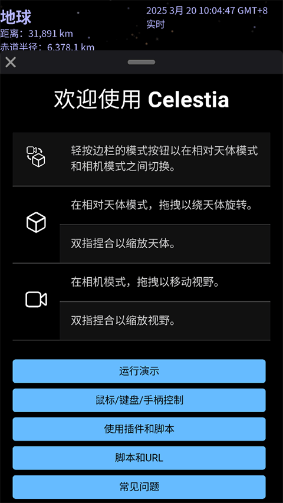

需要为宇宙模拟器掏腰包吗？Celestia 的免费边界和投入账
从 Steam 上架两月即下架说起，拆解 Celestia 为什么能免费、有什么替代方案，以及对不同使用强度的人来说，值不值得为它花时间。
我第一次注意到 Celestia 是在 Steam 上刷到推送——标签写着 Space Sim / Exploration / Education，点开页面才发现它已经下架了。上架到下架，总共两个月。开发团队说"维护成本和其他考虑"，八个字没多解释。
但让我真正坐下来算账的，是另一件事：Celestia 原版是完全免费开源的宇宙模拟器，Celestia官网上能找到所有平台的版本和社区入口。GPL 协议，源码在 GitHub 上躺着，从 1995 年的老版本到现在的 1.7.x，二十多年没碰过钱。那 Steam 上那次算什么？是尝鲜的付费通道？还是试图覆盖运营成本的一次试水？更关键的问题——要不要为宇宙模拟器掏腰包？Celestia 免费的边界在哪里？
定价拆解：免费的底气和那一次短命的付费
先把底裤揭开：Celestia 本体 零元，买断也免费，订阅也免费，没有内购，没有广告。Windows、macOS、Linux 全平台装包直接从Celestia下载拿，一分钱不收。移动端的 celestia.mobi 也是同样的路子——Google Play、App Store、F-Droid、华为应用市场，全渠道免费下载。那 Steam 上那次是怎么回事？
翻了一下社区讨论，那次上架的 Steam 版本定价约 15 元人民币，Steam 抽成 30% 后，开发团队到手大约 10 元。80% 好评率说明玩家认账，但两个月就下架了——维护成本吃掉了这点可怜的收入。Steam Workshop 要持续运营、要审核、要对接 Steam API，这些工作原本是社区志愿者在 Motherlode 论坛上免费做的。换到 Steam 生态里，突然就变成了需要付费覆盖的人力成本。
Steam 下架后，已购买的玩家仍然可以访问已订阅的 Workshop 物品。但对普通用户来说，Motherlode 论坛上那几千个添加件（从 1.3 到 1.7 各版本的历史遗产）才是真正的主力来源——免费、兼容、社区历史悠久。Workshop 刚起步就夭折，没留下任何实质性的生态。
对比一下同类产品的定价格局：Stellarium 免费版功能齐全，Pro 版约 50 元/年但多出来的功能对普通用户感知不强；Star Chart 移动端免费加内购，Pro 版一次性 30 元；SpaceEngine 的宇宙沙盒版定价约 70 元，画面党必入但资源占用感人。Celestia 夹在中间——功能强度和 SpaceEngine 接近，但价格是零。
算账：分三类人算这笔时间账和钱账
"免费"不代表没成本。对软件用户来说，成本是两种：真金白银和投入的时间。Celestia 没在第一种上赚你的钱，但第二种上你得自己掂量。
轻度用：偶尔抬头看看星空
如果你是那种"某天晚上抬头看到星星，想知道那颗是什么"的人，打开 Celestia 搜一下名字，拖到跟前看看就关了。这种使用强度，免费版 100% 够用。不需要任何添加件，不需要学飞行模式，甚至不需要看快捷键——鼠标右键拖一圈、滚轮缩放下，五分钟搞定然后关掉。
成本：0 元，5 分钟。同类 Star Chart 也能搞定，但 Celestia 的优势是数据精度——它用的是 NASA 的 JPL 星历，行星位置计算到小数点后几位都不差。你搜"木星"，出来的是 2026 年 10 月 16 日这一天木星在黄道上的精确位置，不是一张静态图。
主力用：每天半小时，真的想"逛宇宙"
如果你每天花半小时打开 Celestia，今天看土星环，明天追哈雷彗星的轨迹，后天去火星的卫星上转一圈——这时候你会开始发现免费版的边界：
- 原版默认安装只带太阳系行星和主要卫星，深空天体需要自己添加
- 默认贴图分辨率是 1024×1024，月球表面细节不够看
- Lua 脚本功能藏得深，不会写就只能手动操作
这时候 Motherlode 论坛的添加件就派上用场了——高清贴图包、深空天体目录、自动飞行轨迹脚本，全免费。问题是安装麻烦：桌面版解压到 extras/ 目录就行，但移动端要手动拷到 Android/data/ 下的特定路径，iOS 还要用 iTunes 文件共享。
算下来，主力用户的成本还是 0 元，但时间成本升到了 2~3 小时——花一下午把常用的添加件装好、把快捷键摸熟，之后每天的半小时就纯粹是享受了。这个时间值不值？换成付费替代品的话，SpaceEngine 70 元买断，添加件生态更省事，但画面风格偏"科幻渲染"不像 Celestia 这么真实。
重度用：做天文教育、内容创作、甚至自己改代码
如果你是学校的天文老师，想用 Celestia 做课堂演示动画；或者是 UP 主，想做一期"从地球飞到仙女座要多久"的视频；再狠一点，想自己写 Lua 脚本加一个新天体进来——这时候免费版的边界彻底消失了。
Celestia 的 Lua 脚本 API 是开放的，Celestia文档里有完整的函数说明。你可以用脚本让相机自动飞行到指定天体、模拟日食月食、甚至创建一个虚拟行星放到轨道上。这部分完全免费，但学习曲线陡峭——Lua 语法只是入门，理解 Celestia 的坐标系、时间系统、渲染管线才是真正的门槛。
重度用户的成本：0 元 + 数周的学习时间。如果不想花这个时间，Stellarium Pro 的"演示模式"可以快速生成教学动画，50 元/年的订阅费买的就是省下来的那些小时。SpaceEngine 的场景编辑器更直观，但 70 元买断加上更高的硬件要求（显卡至少 GTX 1060），总成本反而是 Celestia 零头的好几倍。

替代方案：不碰 Celestia 还有什么路
如果你看完上面的账觉得 Celestia 不是你的菜，还有三个选择：
降低使用频率——不用宇宙模拟器，装个星图 App 偶尔看看够不够？Star Chart 免费版能看到足够多的天体标注，功能上比 Celestia 浅但上手快。代价是失去了"飞去火星看看"这种沉浸感。
用 Stellarium——完全免费，星空观测功能比 Celestia 强，定位更偏"天文爱好者的星图软件"。但漫游宇宙的自由度不如 Celestia 高，不能随便飞到任意星系。
砸钱上 SpaceEngine——画面最强的宇宙模拟器，行星生成器能随机造出无限数量的星球。70 元买断永久使用，但 Linux 支持差、资源占用高、没有移动端。适合画面党，但不适合想真的"学"宇宙的人。
结论：三类人，三个不同的决策
最后把账算成一句话：
永远不用为 Celestia 本体掏钱。 它的开发模式（开源 + 社区贡献）决定了本体不会收费，Steam 上那次付费尝试也证明了收费反而增加维护成本得不偿失。
- 轻度用的人：闭眼装。0 成本，想起来就打开看看，关掉也不心疼。
- 主力用的人：也装。花两小时把添加件搞好，之后是纯享受。但如果你连这两小时都不想花，考虑 SpaceEngine 一步到位。
- 重度用的人：必须装。没有任何付费替代品能同时提供 Celestia 这么精确的天文数据、这么开放的脚本 API、还有这么活跃的社区——这三条加起来，免费已经是捡着了。
真正需要掏钱的不是 Celestia 本体，而是你自己的时间预算。每天半小时逛宇宙值不值？这个问题只有你自己能回答。但至少你不用先掏 15 块钱才能试一试——Steam 下架了，直接装好双击就行。这篇文章引用的 Celestia 资料我同步维护在三个仓库，GitHub 主版本、Gitee 和 GitCode 分别给国内不同网络环境的朋友留了镜像，哪个能用看自己情况。
